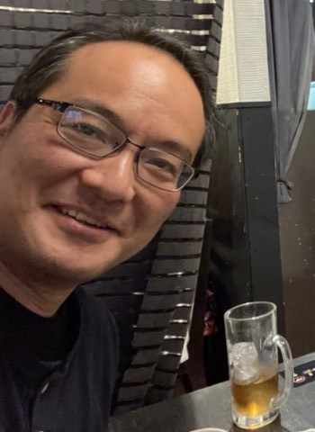
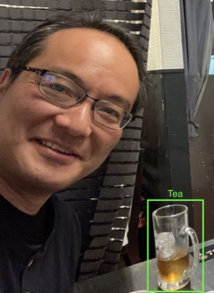

Doctor of Engineering
A field study in Afghanistan in which members of different ethnic groups took part in online discussions facilitated by a conversational AI agent. Participants showed reduced interethnic prejudice and intergroup anxiety afterwards, providing evidence that AI-facilitated e-contact can support reconciliation in a conflict-affected society.
Introduces an automated facilitation agent that keeps large-scale online discussions productive: it reads the evolving argument structure of a debate and posts facilitation messages that encourage participants to add issues, ideas, and reasons. The system has been deployed in real civic discussions, showing how AI can help crowds reach consensus.
Proposes a negotiation protocol for agents whose preferences over multiple interdependent issues form nonlinear utility spaces, where classical linear negotiation methods break down. Agents sample high-utility regions of their own space and submit them as bids, and a mediator searches for combinations that maximize social welfare. This work launched the “complex automated negotiation” research line behind ACAN and ANAC.
Addresses auctions with interdependent values, where a bidder’s valuation depends on information held privately by other bidders. Building on the contingent-bids model, the paper gives a concrete, computationally tractable auction design in which truthful bidding remains a dominant strategy, bringing this theoretical model into practical mechanism design. Selected as Best Paper out of 553 submissions.
Dr. Takayuki Ito is Professor of Kyoto University. He received the B.E., M.E., and Doctor of Engineering from the Nagoya Institute of Technology in 1995, 1997, and 2000, respectively. From 1999 to 2001, he was a research fellow of the Japan Society for the Promotion of Science (JSPS). From 2000 to 2001, he was a visiting researcher at USC/ISI (University of Southern California / Information Sciences Institute).
From April 2001 to March 2003, he was an associate professor at Japan Advanced Institute of Science and Technology (JAIST). From 2004 to September 2020, he was at Nagoya Institute of Technology, becoming a full professor in 2014. Since October 2020, he is a Professor at Kyoto University. He was also an Honorary Professor at the University of Wollongong, Australia (2022–2025), has been an Associate Member of the Science Council of Japan since 2023, and an Adjunct Professor at Guangzhou University, China, since 2024.
From 2005 to 2006, he was a visiting researcher at Harvard University (Division of Engineering and Applied Science) and at the Center for Coordination Science, MIT Sloan School of Management. From 2008 to 2010, he was a visiting researcher at the Center for Collective Intelligence, MIT Sloan School of Management.
He is a board member of IFAAMAS, Executive Committee Member of IEEE Computer Society Technical Committee on Intelligent Informatics, and has served as PC-Chair of AAMAS2013, PRIMA2009, and General Chair of PRIMA2014. He is a senior member of ACM and IEEE.
Core Research Question: "Why can people reach consensus?" and "What is consensus?"
Prof. Takayuki Ito, Ph.D.
Department of Social Informatics
Graduate School of Informatics
Kyoto University
Yoshida-Honmachi, Kyoto 606-8501, Japan
Room 424, Building No. 7
TEL: +81-75-753-4821 (Direct)
FAX: +81-75-753-4820 (Direct)
Email: ito [at] i.kyoto-u.ac.jp
🔬 Lab Homepage
📄 Download CV (PDF)